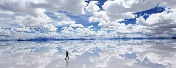
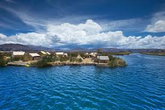
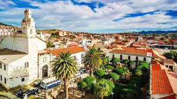

El Salar de Uyuni es el desierto de sal más grande del mundo. Durante la temporada de lluvias se convierte en un inmenso espejo natural que refleja el cielo de manera impresionante.

El Lago Titicaca es considerado el lago navegable más alto del mundo. Sus aguas, islas y paisajes ofrecen una experiencia única para los visitantes.

Conocida como la Ciudad Blanca, Sucre destaca por su arquitectura colonial, sus plazas históricas y su gran importancia cultural para Bolivia.